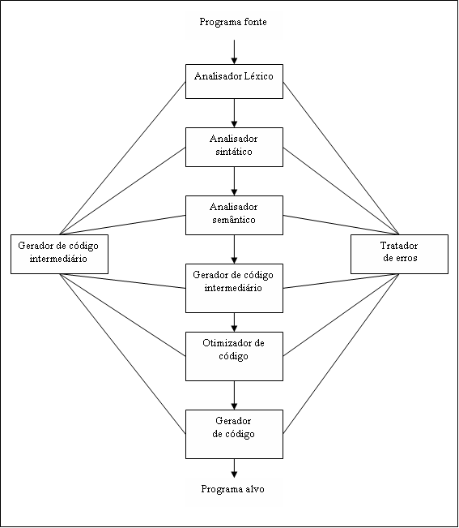

Voltar
Índice
Voltar
Índice
COMPILADORES
Compiladores são programas que traduzem programas escritos em uma linguagem (código fonte) para outra (código alvo), geralmente de uma linguagem de alto nível para outra de baixo nível, como instruções de um processador. Além de traduzir de uma linguagem para outra, o compilador vai verificar a existência de erros no código fonte (AHO; ULLMAN, 1995).
Normalmente, o processo de compilação é composto por algumas fases, sendo elas:
Figura
1: Fases da compilação Fonte:
Aho; Sethi; Ullman (1995, p. 5)
Louden (2004) explana que as fases da compilação podem ser entendidas como peças separadas dentro do compilador, que podem efetivamente ser escritas como operações separadas, embora na prática elas sejam freqüentemente agrupadas.
Cada fase pode gerar uma representação intermediária do código fonte. Os compiladores podem executar completamente uma fase, gerar uma representação intermediária, a qual será passada para a próxima fase, e assim sucessivamente. Esses são chamados de compiladores de múltipla passagem. Mas muitos compiladores, por questões de eficiência, executam gradativamente todas as fases da compilação, conforme avançam no código fonte. Estes são chamados de compiladores de passagem simples.
HISTÓRIA DA COMPILAÇÃO
No final da década de 1940 John Von Neuman desenvolveu os primeiros computadores armazenadores de programas, com esta evolução surgiu a necessidade de escrever seqüências de código, ou programas, para que os computadores realizasses os comandos desejados. Os primeiros programas eram escritos em foram de linguagem de maquina (código numérico), mas este tipo de código consome muito tempo e é muito cansativo. Por este motivo longo este tipo de codificação foi substituída pela linguagem de montagem, onde as instruções e endereços de memória adotam uma forma simbólica.
As vantagens da linguagem de montagem são que aumentam muito a velocidade e a precisão com que os programas podem ser escritos, e são utilizadas ainda hoje, principalmente quando muita velocidade ou concisão de código são necessárias. Mas a linguagem de montagem também possui alguns defeitos, este tipo de código não é fácil de escrever e é difícil de ler e entender o que esta escrito e possui um dependência da máquina, ou seja, o código que escrito para um determinado computador precisa ser modificado para outro.
O próximo grande objetivo era facilitar o modo como eram escritas as linguagens de programação, numa forma mais clara e fácil de compreender e escrever, uma linguagem que fosse mais semelhante com a linguagem natural ou notação matemática e que não dependesse de uma máquina particular. Inicialmente se julgou que isso seria impossível, ou que se fosse possível o código objeto seria tão ineficiente que seria inútil. Mas em meados de 1954 o desenvolvimento da linguagem Fortran e de seu compilador pelo um grupo da IBM, afastou este pensamente.
O desenvolvimento dos primeiros compiladores foi coincidentemente na mesma época que Noam Chomsky iniciou o estudo da estrutura da linguagem natural, onde os resultados alcançados por Chomsky tornaram a construção dos compiladores bem mais simples e em parte automatizados. Em seus estudos Chomsky classificava as linguagens de acordo com a complexidade de sua gramáticas e o poder dos algoritmos necessários para reconhece - lá. A hierarquia Chomsky como foi chamado o estudo das gramáticas, foi dividida em quatro níveis, tipo 0, tipo 1, tipo 2 e tipo 3.
Para a linguagem de programação as gramática do tipo 2, também denominada gramática livre de contexto, são as mais úteis e atualmente são a forma padrão de representar a estrutura da linguagem de programação. Entre 1960 e 1970 foi estudado o problema da análise sintática, que determina qual é o algoritmo mais eficiente para reconhecer linguagens livres de contexto, a resolução deste é bastante complexa e hoje faz parte da teoria da computação.
Autômatos e expressões regulares são assuntos relacionados com as gramáticas livres de contexto, estas correspondem ao do tipo 3. No estudo destes temas Chomsky, levou o método simbólico para expressar a estrutura das palavras de uma linguagem de programação. Na geração de código o desenvolvimento de um código fonte eficiente, assunto bem mais complexo, tem sido estudado desde que os primeiros compiladores surgiram.
No problema da análise sintática, foram estudadas várias formas de programas para automatizar essa parte do desenvolvimento do compilador, inicialmente estes programas receberam a denominação de compilador para compilador, mas são mais bem identificados como geradores de analisadores sintáticos, pois conseguem automatizar somente uma parte do processo de compilação. Já no estudo de autômatos finitos levaram ao desenvolvimento de outra ferramenta, conhecida como gerador de sistema de varredura.
Com o avanço dos projetos voltados à área de compiladores se obtive resultados significantes, onde estes têm incorporados algoritmos mais sofisticados para inferência de informações contidas em um programa. Como exemplo disto pode-se destacar o algoritmo de Hindley-Milner para verificação de tipos, utilizados na compilação de linguagens funcionais. Os compiladores estão cada vez mais fazendo parte do ambiente de desenvolvimento interativo baseados em janelas (IDE), onde estes contêm editores, organizadores, depuradores e gerenciadores de projetos.